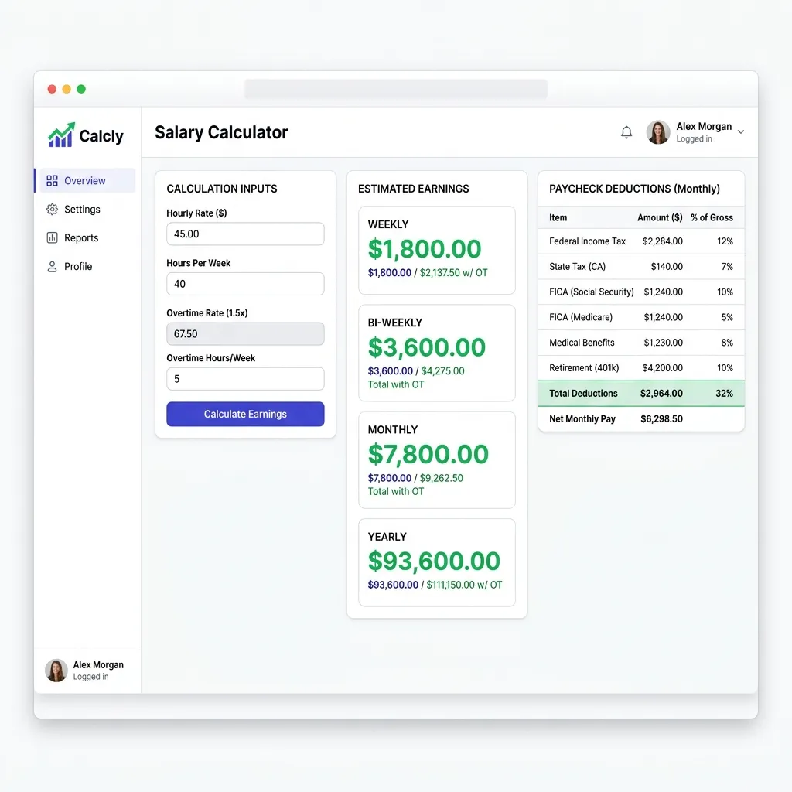

Executive Summary: Whether you are a shift nurse tracking graveyard differentials, a software engineer choosing between a W-2 salary and a $125/hour 1099 consulting contract, or a plant manager administering a blended overtime payroll, understanding the precise translation of hourly wages to annualized compensation is a foundational professional competency. Compensation is rarely a simple multiplication of hours by rate; it is an integrated system of tax brackets, FICA payroll withholdings, pre-tax savings multipliers, and employer benefit offsets. This comprehensive manual breaks down the core mathematical models, provides troubleshooting routines for spreadsheet formulas, models long-term retirement projections using compound interest theory, and outlines shop-floor operational workflows to protect and maximize your real earning power.
Introduction: The Modern Landscape of Compensation
In the contemporary global economy, the traditional boundary separating hourly wages and salaried compensation has blurred. The rise of the gig economy, remote consulting frameworks, specialized shifts in high-value manufacturing, healthcare, and software-as-a-service (SaaS) consulting has forced professionals to become their own financial analysts. When negotiating a compensation package, evaluating a job transition, or mapping out a multi-decade retirement plan, relying on rough estimations can lead to costly miscalculations. An employee who accepts a $50/hour contract in place of a $90,000 W-2 salary may believe they have secured a massive raise, only to realize that self-employment taxes, unpaid time off (PTO), and individual health insurance premiums have eroded their net margins.
Understanding compensation math requires moving beyond the standard corporate assumption that a year contains exactly 2,080 working hours. In practice, our calendars introduce natural fluctuations. Bi-weekly pay schedules occasionally generate 27 paychecks in a calendar year rather than the typical 26, creating complex cash-flow peaks. Shift differentials—premiums paid for overnight, weekend, or holiday work—compound when overlaid with overtime rules, requiring compliance under complex regulations like the United States Fair Labor Standards Act (FLSA) or India’s Factories Act of 1948. Additionally, the cascade from gross pay to net take-home pay involves a series of mathematical deductions: marginal tax rates, Social Security and Medicare taxes, pre-tax contributions to retirement portfolios or health accounts, and post-tax allocations.
Furthermore, your salary is not merely a mechanism to fund current lifestyle consumption. In terms of lifetime wealth generation, your compensation represents the capital engine for compound interest accumulation. A difference of just $5 per hour in base wages, when systematically funneled into a low-cost index fund compounding at an inflation-adjusted 8% annually, can translate to over $500,000 in additional net worth over a 30-year career. To navigate this landscape with authority, professionals must master the underlying mathematical models, understand the comparative tax structures of W-2 salaried employees and 1099 independent contractors, and learn how to build automated spreadsheet algorithms to audit their paystubs and model future earnings.

1. Historical & Economic Evolution of Modern Wage Structures
To understand why modern wage math is structured the way it is, one must examine the history of hourly wage systems. For much of human history, labor was primarily agricultural or task-based. Workers were paid based on crop yields, seasons, or specific output (known as piece-rate labor). The shift to hourly and salaried compensation began in earnest during the Industrial Revolution of the 18th and 19th centuries. As steam-powered factories replaced small workshops, labor became highly synchronized. Employers needed an objective, standard metric to measure labor inputs, leading to the widespread adoption of the mechanical time-clock and timekeeper logs.
This rigid clock-in system initially led to grueling workdays exceeding 12 to 14 hours. However, prolonged labor struggles in the late 19th and early 20th centuries championed the standard workday. The famous slogan "Eight hours for work, eight hours for rest, eight hours for what we will" became the rallying cry of unions globally. In 1926, Henry Ford famously instituted a five-day, 40-hour workweek for his automotive workers, demonstrating that shorter work hours actually optimized manufacturing efficiency, reduced shop-floor accidents, and improved worker retention. This 40-hour benchmark was later codified in the United States under the Fair Labor Standards Act (FLSA) of 1938.
In the contemporary digital landscape, technological significance has taken a new form. Manual punch cards have transitioned to cloud-based time-tracking applications, biometric scanners, automated payroll systems, and GPS-enabled tracking for remote teams. Automated systems calculate earnings in real time, factoring in complex shift premiums and regulatory guidelines. Despite these technological tools, understanding the underlying mathematical formulas remains vital for career negotiation and financial literacy.
2. Core Calculations of Standard Pay Intervals
Converting hourly wages to other pay frequencies is the fundamental starting point of payroll mathematics. Let $R_h$ represent the hourly pay rate, and let $H_w$ represent the regular number of hours worked per week. Under a standard full-time equivalency (FTE) model, $H_w = 40$ hours, and the year is assumed to contain exactly $W = 52$ weeks.
This yields the baseline corporate standard of $40 \text{ hours/week} \times 52 \text{ weeks/year} = 2,080 \text{ hours/year}$. Let us examine the exact algebraic equations for converting this hourly wage into five standard pay frequencies:
Weekly Pay ($P_{\text{weekly}}$)
Calculates gross income received 52 times a year.
Example: For $R_h = $35.00/hr and $H_w = 40$, $P_{weekly} = 35 \times 40 = $1,400.00.
Bi-Weekly Pay ($P_{\text{biweekly}}$)
Calculates gross income received every two weeks (26 times in a standard year).
Example: For $R_h = $35.00/hr and $H_w = 40$, $P_{biweekly} = 35 \times 40 \times 2 = $2,800.00.
Semi-Monthly Pay ($P_{\text{semimonthly}}$)
Calculates gross income received twice per month, typically on the 1st and 15th, or 15th and 30th (exactly 24 times a year).
Example: For $R_h = $35.00/hr and $H_w = 40$, $P_{semimonthly} = \frac{35 \times 40 \times 52}{24} = $3,033.33.
Monthly Pay ($P_{\text{monthly}}$)
Calculates gross income received 12 times a year.
Example: For $R_h = $35.00/hr and $H_w = 40$, $P_{monthly} = \frac{35 \times 40 \times 52}{12} = $6,066.67.
Yearly Salary ($P_{\text{annual}}$)
Calculates the total annualized base pay over a standard full year of 52 weeks.
Example: For $R_h = $35.00/hr and $H_w = 40$, $P_{annual} = 35 \times 2,080 = $72,800.00.
The Bi-Weekly vs. Semi-Monthly Discrepancy
A frequent pitfall in personal cash flow management is treating bi-weekly and semi-monthly pay intervals as interchangeable. While their annual gross totals are identical, their operational dynamics differ significantly:
- Bi-Weekly Pay (26 pay periods): Under this structure, you receive a paycheck every second Friday. Because a year contains 52 weeks (and 52 is not perfectly divisible by 12 months), there are ten months in the year containing exactly two pay periods, and two months containing three pay periods. Financial planners refer to these as "magic pay months." In these months, your third paycheck represents "surplus" cash flow that can be completely diverted to savings, investments, or lump-sum debt reductions, since your core monthly fixed costs (rent/mortgage, utilities) were already covered by the first two paychecks.
- Semi-Monthly Pay (24 pay periods): You are paid on two static days of the month, such as the 1st and 15th, or the 15th and last day of the month. Your cash flow is perfectly uniform. Each individual paycheck is mathematically larger than a bi-weekly paycheck because the annual total is divided by 24 rather than 26.
Let us model this discrepancy mathematically using an annualized salary of $78,000 ($37.50/hour for 40 hours per week):
3. Shift Differentials & Overtime Multipliers
For hourly workers, calculating compensation is rarely as simple as multiplying hours by a single base rate. Employers utilize shift differentials—hourly premium increases—to incentivize staff to cover night shifts, weekend shifts, or holidays. Under legal frameworks such as the United States Fair Labor Standards Act (FLSA), calculating overtime ($H_{ot} > 40$ hours in a workweek) in the presence of shift differentials requires strict regulatory mathematics.
The Concept of "Regular Rate of Pay" (RRP)
Under the FLSA, overtime compensation must be calculated using the worker’s Regular Rate of Pay (RRP), not their base hourly rate. The RRP is a blended rate that factors in all straight-time earnings, including shift differentials, bonuses, and production premiums, divided by the total number of hours worked in that week. Let us express this mathematically:
Where $R_i$ is the base hourly rate for a specific shift, $H_i$ is the hours worked at that rate, and $P_d$ is any shift differential premiums or bonuses earned. Once the RRP is calculated, any overtime hours ($H_{ot} > 40$) are paid at an additional premium of $0.5 \times \text{RRP}$ (or a total multiplier of $1.5 \times \text{RRP}$).
Compounding Shift Premiums: Step-by-Step Scenario
Let us calculate a comprehensive scenario. An industrial nurse has a base rate of $R_{base} = $40.00/hour. During a single 7-day workweek, she works the following shifts:
- 30 hours of standard Day Shifts at the base rate ($40.00/hr).
- 10 hours of Graveyard Shifts with a +15% Night Shift Differential premium (base + $6.00/hr = $46.00/hr).
- 5 hours of Weekend Graveyard Shifts with a +25% compounding premium (base + $10.00/hr = $50.00/hr).
The total hours worked are $30 + 10 + 5 = 45$ hours. Because this exceeds 40 hours, there are 5 hours of overtime. Let's calculate the payroll cascade:
Step 1: Calculate Straight-Time Earnings at All Rates
- Day Shift: 30 hours × $40.00 = $1,200.00
- Graveyard: 10 hours × $46.00 = $460.00
- Weekend Graveyard: 5 hours × $50.00 = $250.00
- Total Straight-Time Earnings: $1,200.00 + $460.00 + $250.00 = $1,910.00
Step 2: Calculate the Regular Rate of Pay (RRP)
Divide total straight-time earnings by the total hours worked (45 hours):
Step 3: Calculate the Overtime Premium Pay
The FLSA requires an extra 0.5 × RRP for each of the 5 overtime hours:
Step 4: Calculate Total Weekly Compensation
Compliance Note: If the employer had incorrectly calculated overtime based only on the standard day shift rate ($40.00 × 1.5 × 5 = $300 overtime pay added to standard shift earnings of $1,200 + $460 + $250 = $1,910, totaling $2,210 but excluding correct RRP rules for straight-time), they would violate FLSA wage standards.
4. Gross vs. Net Pay: Taxes, Pre-Tax Deductions, & Post-Tax Allocations
The number at the top of your paystub (Gross Pay) is rarely the number that lands in your checking account (Net Pay). The transition from gross to net is a mathematical cascade governed by federal, state, and local tax statutes, employer benefit options, and personal saving preferences. Understanding this cascade is vital to mapping your true cash flow.
The Wage Cascade Equation
Let us define the complete algebraic cascade from Gross Pay ($G$) to Net Pay ($N$):
Where:
- $D_{pre\_tax}$ = Pre-tax deductions (Traditional 401k, 403b, HSA, FSA, pre-tax health insurance premiums).
- $T_{FICA}$ = Federal Insurance Contributions Act taxes (Social Security and Medicare).
- $T_{federal}$ = Federal income tax withholding, determined by progressive tax brackets.
- $T_{state}, T_{local}$ = State and local income taxes.
- $D_{post\_tax}$ = Post-tax deductions (Roth 401k/IRA, wage garnishments, life insurance premiums).
Step-by-Step Mathematical Walkthrough
Let us compute the net paycheck for an employee earning $50.00/hour working a standard 40-hour week ($2,000.00 weekly gross, or $104,000.00 annualized), filing as Single, using typical tax rates:
Step 1: Gross Pay ($G$)
Step 2: Pre-Tax Deductions ($D_{pre\_tax}$)
The employee contributes 10% to a Traditional 401(k) and $50.00 weekly to a Health Savings Account (HSA):
HSA Contribution = $50.00
Total Pre-Tax Deductions = $200.00 + $50.00 = $250.00
Adjusted Gross Income (AGI) for Federal Tax calculation: $2,000.00 - $250.00 = $1,750.00
Step 3: FICA Taxes ($T_{FICA}$)
FICA taxes are calculated on gross wages. Under IRS rules, HSA contributions are exempt from FICA taxes if made through an employer Section 125 cafeteria plan, but 401(k) contributions are not. Let us assume the HSA is exempt:
Social Security (6.2%) = $1,950.00 × 0.062 = $120.90
Medicare (1.45%) = $1,950.00 × 0.0145 = $28.28
Total FICA Taxes = $120.90 + $28.28 = $149.18
Step 4: Federal Income Tax Withholding ($T_{federal}$)
Using progressive marginal tax brackets, tax is withheld on the Adjusted Gross Income ($1,750.00/week or $91,000.00 annualized). Assuming a flat effective withholding of 15% for simplicity in this weekly example:
Step 5: State and Local Taxes ($T_{state} + T_{local}$)
Assuming a flat state tax rate of 4.5% on AGI:
Step 6: Net Pay Calculation ($N$)
N = $2,000.00 - $250.00 - $149.18 - $262.50 - $78.75
N = $1,259.57
In this scenario, the worker's net take-home pay is 62.98% of their gross earnings. The remaining 37.02% is allocated to statutory taxes (24.52%) and personal pre-tax wealth-building and health savings (12.50%).
5. The Mathematics of Salary Compound Interest and Retirement Projections
An hourly wage is not just funds for immediate expenses; it is the raw capital engine of your long-term retirement planning. When negotiating an increase in your hourly pay, you are compounding your long-term investment capability. To illustrate this, let us explore the mathematics of compound savings.
The Compound Interest & Annuity Formulas
When an employee saves a fixed portion of their wages on a regular schedule (such as monthly or bi-weekly), their savings model behaves as an ordinary annuity. The Future Value ($FV$) of an ordinary annuity compounded at regular intervals is expressed as:
Where:
- $PMT$ = The regular periodic contribution (weekly, bi-weekly, or monthly).
- $r$ = The annual interest rate (nominal return rate).
- $n$ = The compounding frequency per year (e.g., $n = 12$ for monthly).
- $t$ = The total time horizon in years.
Wealth Accumulation Projections
Let us run a multi-decade mathematical comparison. Suppose an employee works a standard 40-hour week ($2,080 \text{ hours/year}$) and systematically invests exactly 15% of their gross hourly earnings at the end of each month. We assume an average nominal annual market return of 8% compounded monthly ($r = 0.08, n = 12$).
| Hourly Wage ($R_h$) | Annual Gross Pay | Monthly Contribution ($PMT$) | 10 Years ($t=10$) | 20 Years ($t=20$) | 30 Years ($t=30$) | 40 Years ($t=40$) |
|---|---|---|---|---|---|---|
| $20.00/hr | $41,600 | $520.00 | $96,170 | $303,889 | $753,674 | $1,727,117 |
| $40.00/hr | $83,200 | $1,040.00 | $192,341 | $607,778 | $1,507,348 | $3,454,233 |
| $60.00/hr | $124,800 | $1,560.00 | $288,511 | $911,667 | $2,261,023 | $5,181,350 |
| $80.00/hr | $166,400 | $2,080.00 | $384,682 | $1,215,556 | $3,014,697 | $6,908,467 |
| $100.00/hr | $208,000 | $2,600.00 | $480,852 | $1,519,445 | $3,768,371 | $8,635,584 |
This mathematical projection highlights a vital career negotiation lesson: Increasing your hourly wage from $20/hr to $40/hr does not simply double your lifestyle consumption—it expands your 40-year wealth-building potential by $1.72 million. The leverage of compound interest makes early wage negotiation one of the highest-return activities in your professional lifetime.
6. Contractor (1099) vs. Salaried Employee (W-2) Financial Models
One of the most common compensation forks is choosing between a salaried (W-2) position and a contract (1099) assignment. Recruiters often entice W-2 workers with higher nominal hourly rates for 1099 contracts. However, 1099 contractors assume heavy financial burdens that standard employees rarely contemplate.
The Hidden Costs of 1099 Contracts
- Self-Employment (SE) Tax: In a salaried W-2 role, the employer and employee split FICA taxes equally (each pays 6.2% for Social Security and 1.45% for Medicare, totaling 7.65% each). A 1099 contractor must pay both portions as Self-Employment tax—a flat 15.3% on 92.35% of net self-employment earnings.
- Absence of Paid Time Off (PTO): W-2 packages typically include 10 national holidays, 15 vacation days, and 5 sick days (totaling 30 paid days off, or 6 weeks). A contractor is only paid for hours billed. Taking 6 weeks of time off means their billing year drops from 52 weeks to 46 weeks.
- Healthcare and Benefits Premium Cost: Salaried employers typically subsidize 70% to 80% of health, dental, and vision insurance premiums, which represents a non-cash benefit worth $8,000 to $18,000 annually. A contractor must purchase health insurance on the open market, paying full premium costs out of pocket.
- Retirement Matching Forgone: W-2 roles often match 401(k) contributions up to 3% to 6% of gross pay. Contractors receive no matching funds and must fund their individual SEP-IRAs or Solo 401(k) plans completely.
The Loaded Hourly Rate Equivalence Formula
To accurately compare a W-2 salary offer to a 1099 hourly rate, you must compute the Loaded Hourly Rate equivalent. This equation adds the cash value of all benefits and tax differentials to the baseline salary before dividing by the contractor’s actual billable hours:
Where:
- $P_{W2\_base}$ = The comparative annual W-2 gross salary.
- $C_{benefits}$ = The out-of-pocket cost of replacing health, dental, and life insurance.
- $C_{FICA\_employer}$ = The extra 7.65% tax burden ($P_{W2\_base} \times 0.0765$).
- $C_{retirement\_match}$ = The lost matching funds (e.g., 4% of base pay).
- $H_b$ = The billable hours worked per year. If taking 6 weeks of combined unpaid holidays, vacation, and sick leave, $H_b = 40 \text{ hours/week} \times 46 \text{ weeks} = 1,840 \text{ hours}$.
W-2 vs. 1099 Financial Comparison Model
Let us run a step-by-step mathematical translation. A software engineer is offered a choice: a $100,000.00 W-2 salary (with 30 days of paid PTO, a 4% 401k match, and fully subsidized health benefits worth $12,000.00) or a 1099 hourly contract. Let's calculate the break-even 1099 hourly rate:
The Financial Takeaway: To match a W-2 salary of $100,000.00, a contractor must charge a minimum of $67.20/hour. If they accept a standard flat mathematical rate ($100,000 / 2,080 = $48.08/hr) on a 1099 contract, they are taking a massive 28.4% pay cut in real economic terms once taxes, benefits, and unpaid vacations are calculated.
7. Step-by-Step Budgeting and Financial Planning Integration Guide
Translating hourly pay into active financial plans requires structure. Hourly wage workers often struggle with budgeting because their monthly gross pay fluctuates based on the number of working days in a month. In months with 23 working days, paychecks are larger than in months with 20 working days.
The 50/30/20 Budget Framework
The 50/30/20 rule is a highly effective structural framework for dividing net monthly income (take-home pay):
- 50% to Essential Needs: Housing (rent/mortgage), groceries, basic utilities, transportation, health insurance premiums, and minimum debt servicing obligations.
- 30% to Lifestyle Wants: Dining out, subscription entertainment, gym memberships, leisure travel, and optional shopping.
- 20% to Savings & Debt Acceleration: Emergency fund building, investing in stock/bond portfolios, contributing to IRAs/401ks, and extra payments on credit card debt or student loans.
Cash Flow Smoothing for Variable Hourly Workers
If your weekly hours fluctuate due to rotating shifts or client demand, utilizing a holding account structure (the "Hills and Valleys" method) is essential:
- Determine Your Baseline Net Month: Calculate the minimum amount you would make working the fewest possible hours in a month (e.g., $3,000/month).
- Establish a Buffer Holding Account: Direct all your incoming paychecks into a separate business or high-yield savings account.
- Pay Yourself a Static Monthly Salary: Automate a monthly transfer from your buffer holding account to your primary household checking account, matching your baseline net budget (e.g., $3,200).
- Accumulate Surpluses in High-Earning Months: During months with 23 working days or high overtime, the surplus cash accumulates in the buffer holding account to bridge the gap during months with low billable days or unpaid holidays.
8. Troubleshooting Spreadsheet Calculations
Building personal budget models or auditing employer payroll schedules in Microsoft Excel or Google Sheets requires precise formula structures. The following section outlines common mathematical calculations, time-tracking bugs, and the formulas required to solve them.
1. Calculating Progressive Income Tax with SUMPRODUCT
Many people build highly fragile spreadsheets with nested IF statements to calculate progressive tax brackets. When tax slabs change, these formulas break. A robust alternative is using the SUMPRODUCT function. Let's model a hypothetical federal tax slab:
| Bracket Limit (A) | Tax Rate (B) | Rate Differential (C) |
|---|---|---|
| $0 | 10% | 10% (0.10) |
| $11,600 | 12% | 2% (0.02) |
| $47,150 | 22% | 10% (0.10) |
| $100,525 | 24% | 2% (0.02) |
In your spreadsheet, if your annual taxable income is in cell E2, you can calculate the federal tax liability using the following dynamic formula:
This function evaluates which brackets the income exceeds, subtracts the bracket limit from the income to find the marginal amount, and multiplies it by the tax rate differential, performing the progressive tax calculation in a single cell.
2. Fixing Excel Time Math and Time Parsing Issues
A common bug when tracking hourly work is subtracting an end time from a start time and getting a bizarre fraction. Excel stores dates as whole numbers and times as decimal values representing a fraction of a 24-hour day. For example, 12:00 PM is stored as 0.5.
The Hourly Shift Subtraction Bug
If cell A2 is the start time (08:00 AM) and cell B2 is the end time (05:00 PM):
If you multiply 0.375 by an hourly rate of $40, Excel returns $15.00 instead of $360.00!
The Resolution:
You must multiply the time difference by 24 to convert the fraction of a day into decimal hours:
3. Overcoming Leap Years and the 27 Bi-Weekly Paycheck Anomaly
Every year has 365 days (or 366 in leap years). Under a bi-weekly cycle, employees receive paychecks every 14 days. Multiplying 14 by 26 yields 364 days. This leaves 1 day unaccounted for in standard years (2 days in leap years). Over a period of 11 to 12 years, these leftover days accumulate into a full 27th pay period.
When this occurs, companies must make an administrative choice:
- Keep check amounts identical: In this case, the employee receives an extra paycheck, increasing their real annual compensation by 3.8% for that year.
- Divide salary by 27 instead of 26: In this scenario, each bi-weekly paycheck is smaller by roughly 3.7%, which can lead to unexpected budgeting issues.
To make your spreadsheet dynamic, reference a dedicated payroll configuration cell for the number of pay periods in the active year (Periods_In_Year: 26 or 27) and base your bi-weekly paycheck calculation on that variable parameter:
9. Advanced Shop-Floor/Field Operational Workflows & Case Studies
Nurse Practitioner Shift Rotation and Overtime Compliance
The Challenge: Sarah is a clinical nurse practitioner working in a regional medical network. She works rotating day, night, and weekend shifts. The network pays a flat day base rate of $45.00/hour, a +10% evening differential ($49.50/hr), and a +20% night shift graveyard differential ($54.00/hr). Due to emergency admissions, Sarah routinely exceeds 40 hours a week. In a high-pressure week, Sarah logged 52 hours: 25 day shift hours, 15 evening shift hours, and 12 night shift hours.
The Mathematical Solution: To calculate Sarah's total gross pay, the network must determine her regular rate of pay (RRP) using FLSA rules to ensure compliance:
- Day straight earnings: 25 × $45.00 = $1,125.00
- Evening straight earnings: 15 × $49.50 = $742.50
- Night straight earnings: 12 × $54.00 = $648.00
- Total straight-time earnings: $1,125.00 + $742.50 + $648.00 = $2,515.50
- Regular Rate of Pay (RRP) = $2,515.50 / 52 hours = $48.375 per hour
- Overtime hours = 12 hours (52 - 40)
- Overtime premium pay = 12 × 0.5 × $48.375 = $290.25
- Total Gross Pay = $2,515.50 + $290.25 = $2,805.75
Result: By executing this exact formula, Sarah’s paycheck is legally compliant. If the employer had mistakenly used only her base rate ($45.00/hr) to calculate the overtime premium, she would have been underpaid by $20.25 in that week alone.
Software Engineer: Transitioning from $140,000 W-2 to 1099 Consulting Gigs
The Challenge: Alex was a senior staff software engineer earning a W-2 salary of $140,000.00. His employer provided fully subsidized family medical benefits ($18,000.00/yr), matched his 401(k) up to 5% ($7,000.00/yr), and provided 30 days of paid PTO. A consulting firm offered Alex a 1099 hourly role at $75.00/hour. Alex needed to calculate if the nominal raise from $75/hr × 2,080 = $156,000.00 represented real economic gain.
The Mathematical Solution: To compare the offers, Alex calculated the loaded value of his W-2 compensation package:
- W-2 Base Salary = $140,000.00
- + Health Benefits Out-of-pocket Replacement = $18,000.00
- + Employer FICA Matching Offset (7.65% of base) = $10,710.00
- + 401(k) Employer Match (5% of base) = $7,000.00
- Total Loaded W-2 Package Value = $175,710.00
- Billable Hours on 1099 (assuming 30 days of unpaid PTO) = 1,840 hours
- Loaded Break-Even 1099 Hourly Rate = $175,710.00 / 1,840 hours = $95.50 / hour
Result: Alex realized that accepting the $75.00/hour 1099 offer would result in a real loss of approximately $37,710.00 a year. He countered the firm at $98.00/hour to ensure a real wage increase, illustrating the risk of ignoring benefits and unpaid leave.
Continuous 24/7 Operations and Shift Differential Management
The Challenge: A chemical production plant runs continuously. Plant operators rotate through day shifts and night shifts. Under the union agreement, night shifts pay a premium of +$4.00/hour. Overtime is paid at 1.5x the hourly rate, and weekend overtime is paid at 2.0x. The plant supervisor needs to budget payroll for a team of 15 operators working standard rotating schedules with overtime.
The Solution: By integrating the shift-differential premiums directly into the dynamic wage formula, the team created a standardized database model that automates calculations. The database checks the shift schedule matrix, calculates the total hours under each category, applies the correct premiums, and computes the blended regular rate of pay before applying the overtime multipliers.
10. Frequently Asked Questions (FAQ)
Q1: How does a leap year affect my annual salary and hourly rate conversions?
A standard year contains 365 days, which is exactly 52 weeks and 1 day. A leap year contains 366 days, which is 52 weeks and 2 days. Because standard salaries are paid on set intervals (weekly, bi-weekly, semi-monthly, or monthly), leap years can occasionally result in an extra pay day. For hourly employees, their income scales directly with the extra days worked (an extra 8 to 16 hours of earning capacity depending on their shift rotation). For salaried employees, their base pay remains fixed, meaning they work the extra day without additional compensation.
Q2: What is the mathematical difference between non-exempt and exempt employee status under labor laws?
The primary legal and mathematical difference lies in the entitlement to overtime compensation. Non-exempt employees are protected under the FLSA (and similar international labor laws) and must be paid 1.5x their regular rate of pay for all hours worked beyond 40 per week. Their annual earnings are highly elastic. Exempt employees are excluded from overtime pay requirements, usually because they earn above a statutory threshold and perform executive or administrative duties. For exempt staff, their yearly salary remains fixed whether they work 35 or 60 hours in a week.
Q3: How do pre-tax deductions (like 401k or HSA) affect my FICA tax calculations versus my federal income tax calculations?
Pre-tax deductions have different rules for different taxes. Contributions to a Traditional 401(k) or 403(b) reduce your taxable income for federal and state income taxes, but they do not reduce your taxable income for FICA taxes (Social Security and Medicare). Conversely, Health Savings Account (HSA) and Flexible Spending Account (FSA) contributions made through an employer Section 125 plan are exempt from both federal income tax and FICA taxes. This makes HSA contributions one of the most tax-efficient savings options available.
Q4: Why does my bi-weekly pay schedule occasionally result in three paychecks in a month, and how should I budget for this?
A bi-weekly cycle results in 26 paychecks per year. Since 52 weeks is not perfectly divisible by 12 months, there are two months in every calendar year where you will receive three paychecks instead of two. The most effective budgeting strategy is to base your monthly spending and savings targets on a standard two-paycheck month. This allows you to treat the two "magic" three-paycheck months as pure savings, investments, or debt-paydown buffers without impacting your baseline lifestyle.
Q5: Can my employer deduct pre-tax health insurance premiums if I am an hourly worker?
Yes, hourly employees are eligible to participate in employer-sponsored health insurance plans. Deductions are typically taken pre-tax under a Section 125 premium conversion plan, which reduces both your federal income tax and FICA tax obligations. If your weekly hours fluctuate, your employer must still deduct the same flat contribution amount, which can make your net pay more volatile during weeks with fewer hours worked.
Q6: What is a blended regular rate of pay, and when is it legally required under the FLSA?
A blended regular rate of pay is legally required under the FLSA when a non-exempt employee works at two or more different hourly rates or shift differentials during a single workweek. The employer cannot calculate overtime pay based solely on the lower rate. Instead, they must add the straight-time earnings from all shifts together, divide by the total hours worked to find the blended Regular Rate of Pay (RRP), and apply the 0.5x overtime premium to that RRP.
Q7: How do overtime laws (like FLSA) apply to remote or hybrid hourly workers?
Overtime laws apply equally to remote, hybrid, and on-site workers paid on an hourly basis. Non-exempt employees must be compensated at the 1.5x overtime rate for all hours worked beyond 40 in a single week, regardless of their working location. This includes any "off-the-clock" tasks, such as answering client emails outside standard hours, logging into cloud-based systems in the evening, or participating in remote meetings.
Q8: What are the tax implications of working in one state but living in another as a remote hourly worker?
Remote work introduces complex multi-state tax scenarios. Generally, you are subject to income tax in the state where you physically perform the work. However, some states have reciprocal tax agreements that allow you to pay tax only to your resident state. If no reciprocity exists, you may need to file tax returns in both states, typically claiming a resident tax credit in your home state for taxes paid to the non-resident state to prevent double taxation.
Q9: How do I calculate the annual salary of a variable-hour shift worker with seasonal fluctuations?
To calculate the annualized salary of a seasonal or variable-hour worker, you cannot use a simple 2,080-hour multiplier. Instead, you must calculate the weighted average of hours worked during peak seasons and off-peak seasons. Sum the projected hours across all seasons to find the total annual hours, multiply by the hourly rate, and incorporate any seasonal premiums or overtime hours to arrive at a realistic gross estimate.
Q10: What is the "salary history ban" in many states, and how does it affect negotiations?
A salary history ban prevents employers from asking job applicants about their previous wages or salary history during the hiring process. This legislation aims to close wage gaps by ensuring that new offers are based on the candidate's skills and the market rate for the role rather than anchoring them to their historical pay. Candidates should research market data and calculate their target hourly or salary rate beforehand to negotiate effectively.
11. Summary & Practical Next-Steps Action Plan
Understanding how hourly wages translate to annual salaries is a vital step toward long-term financial security. Compensation is more than just an hourly number; it is an integrated system of taxes, benefits, and retirement growth. By mastering payroll math, understanding shift differentials, and accurately comparing 1099 and W-2 packages, you can confidently navigate your career transitions and build lasting wealth.
Your Hourly-to-Yearly Wealth Checklist
- ✓ Audit Your Working Hours: Check your employment contract. Ensure calculations are based on your actual hours (e.g., 35, 37.5, or 40 hours) rather than standard assumptions.
- ✓ Identify Shift Differentials: Map your rotating shifts. Ensure shift premiums are factored into your regular rate of pay (RRP) when calculating overtime.
- ✓ Calculate Your Loaded Rate: Before accepting a 1099 contract, calculate your Loaded Hourly Rate equivalent to offset self-employment taxes, health insurance costs, and unpaid PTO.
- ✓ Optimize Pre-Tax Savings: Maximize contributions to HSAs and Traditional 401(k) accounts to lower your Adjusted Gross Income (AGI) and reduce your overall tax liability.
- ✓ Automate Your Cash Flow: If your income is variable, establish a "holding account" to smooth out fluctuations and pay yourself a consistent monthly income.
- ✓ Audit Your Paystubs: Use standard spreadsheet formulas (such as dynamic date/time subtractions multiplied by 24) to ensure your employer's calculations match your recorded hours.
Convert Your Pay Instantly
Use our free Hourly-to-Salary Calculator to model your income, calculate tax deductions, and estimate overtime pay with ease.
Open Salary Calculator →